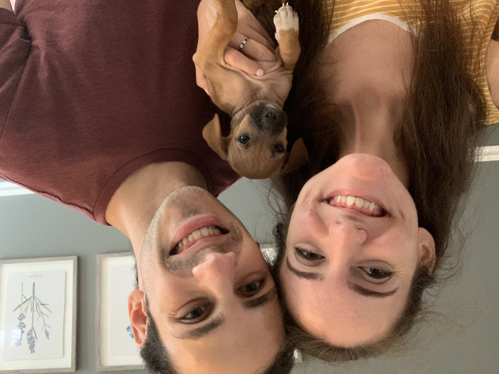

About Kirby
Kirby is a terrier chihuahua mix. She was born in June of 2020 and was rescued from Bourbon County Rescue in Frederick, Maryland.
Kirby and her parents
Kirby's Characteristics
- She is very smol
- She likes getting into trouble
- She loves biting fingers
From 2 months old to 4 months old
Kirby's Tricks
Kirby knows a lot of tricks. She's still learning, but she has made a lot of good progress.
- Sit
- Stay
- Shake
- Spin
- Down